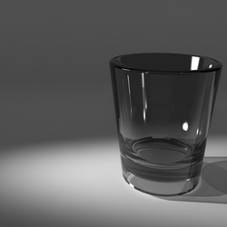

Artikel
Kenapa Puasa ?
---- Ustadz Dr. Muhammad Arifin Badri, MA ----
Ngapain sih pakai puasa segala?
Anda pernah menjalani operasi? Atau paling tidak anda memiliki saudara yang pernah menjalaninya?
Bila pernah, coba diingat kembali kenangan yang pernah anda lalui itu. Mungkin saja dokter yang menangani anda, meminta anda agar berpuasa selama beberapa jam, bahkan kadang kala anda harus berpuasa sampai 8 jam lamanya.
Nah, apakah ketika anda menjalani puasa 8 jam itu terbetik di hati anda harapan mendapat pahala dari Allah, walau hanya sedikit? Atau mungkin juga pahala dari dokter yang menangani anda?
Apa yang membedakan puasa itu dengan puasa yang sedang anda amalkan sekarang ini? Puasa yang sedang anda amalkan di bulan ini, begitu besar pahalanya:
(الصَّلَوَاتُ الْخَمْسُ وَالْجُمُعَةُ إِلَى الْجُمُعَةِ وَرَمَضَانُ إِلَى رَمَضَانَ مُكَفِّرَاتٌ مَا بَيْنَهُنَّ إِذَا اجْتَنَبَ الْكَبَائِرَ) رواه مسلم
"Shalat lima waktu, shalat Jum'at hingga shalat Jum'at selanjutnya, dan puasa bulan Ramadhan hingga puasa bulan Ramadhan selanjutnya adalah penghapus dosa-dosa yang terjadi diantaranya, selama pelakunya menghindari dosa-dosa
besar. " Riwayat Muslim
Bila demikian, apa yang menjadikan puasa di bulan ini memiliki keutamaan yang begitu besar, Sedangkan puasa yang diperintahkan oleh pak dokter, tidak?
Coba anda renungkan, apa perbedaan antara keduanya? Saya yakin, spontan anda akan berkata: Sangat besar perbedaannya. Tapi coba anda mulai menuliskan perbedaan itu di secarik kertas, ada berapa perbedaankah yang berhasil anda
tuliskan?
Ketahuilah saudaraku! semakin banyak jumlah perbedaan yang berhasil anda tuliskan, berarti semakin besar pula pemahaman anda tentang puasa Ramadhan. Dan semakin besar pengetahuan anda semakin besar pula pahala yang –insya
Allah- berhasil anda dapatkan darinya.
Sebaliknya, semakin sedikit perbedaan yang berhasil anda sebutkan, maka itu indikasi bahwa pahala puasa anda juga sedikit.
(رُبَّ صَائِمٍ حَظُّهُ مِنْ صِيَامِهِ الْجُوعُ وَالْعَطَشُ) رواه أحمد وحسنه الألباني
"Mungkin saja orang yang berpuasa, dari puasanya itu hanya mendapatkan rasa lapar dan haus saja." Riwayat Ahmad, dan dinyatakan sebagai hadits hasan oleh Al Albani.
Saudaraku! Apakah anda rela bila perjuangan anda bangun pagi makan sahur, selanjutnya menahan lapar dan haus hingga terbenam matahari, sia-sia begitu saja? Bukan pahala yang anda dapatkan, akan tetapi yang anda dapatkan
hanyalah derita lapar dan haus belaka.
Anda tidak ingin petaka itu menimpa anda? Anda ingin tahu kiatnya?
Temukan jawabannya pada ucapan Abu Bakar bin Abdillah Al Muzani berikut:
مَا فَضَلَ أَبُو بَكْرٍ رضي الله عنه النَّاسَ بِكَثْرَةِ صِيَامٍ وِلاَ صَلاَةٍ، وَلَكِنْ بِشَيْءٍ وَقَرَ فِي صَدْرِهِ
"Tidaklah Abu Bakar radhiallahu 'anhu berhasil mengungguli orang lain dikarenakan ia lebih banyak berpuasa dan shalat, akan tetapi ia mengungguli mereka dengan sesuatu yang tertanam di dalam dadanya."
Inilah jawabannya! Isi hati beliaulah yang menjadikannya berhasil mengungguli seluruh umat Islam.
Beliau tidak pernah berpuasa di bulan Ramadhan lebih dari satu bulan, dan dalam satu hari juga shalat fardhu yang beliau lakukan hanya lima waktu dan demikian juga lainnya.
Yang membedakan beliau dari lainnya ialah niatnya. Beliau berpuasa sama dengan kita, akan tetapi niat puasa beliau jauh lebih baik dari niat puasa kita.
Sekedar menggambarkan perincian niat para ulama' maka berikut saya sebutkan beberapa jenis-jenis niat dalam suatu amalan:
1. Niat menjalankan ibadah kepada Allah dengan berpuasa di bulan Ramadhan, dan ini adalah niat yang paling utama dan paling mendasar. Tanpa niat ini amalan anda tidak akan diterima Allah, dan tidak bernilaikan ibadah, bahkan
bisa saja puasa anda berubah menjadi amal kemaksiatan.
(قَالَ اللَّهُ تَبَارَكَ وَتَعَالَى أَنَا أَغْنَى الشُّرَكَاءِ عَنِ الشِّرْكِ مَنْ عَمِلَ عَمَلاً أَشْرَكَ فِيهِ مَعِى غَيْرِى تَرَكْتُهُ وَشِرْكَهُ) رواه مسلم
"Allah Yang Maha Suci lagi Maha Tinggi berfirman: Aku adalah Dzat Yang paling tidak membutuhkan kepada persekutuan, karenanya barang siapa yag mengamalkan suatu amalan sedangkan padanya ia menyekutukan Aku dengan selain Aku,
niscaya Aku meninggalkannya bersama sekutunya itu."
Riwayat Muslim
Niat inilah yang membedakan antara anda sebagai seorang yang beragama Islam dengan orang-orang kafir, atau musyrik. Walaupun niat jenis ini adalah niat yang paling mendasar dan pokok, akan tetapi niat inilah yang paling sering
kita lalaikan. Sudahkah anda senantiasa menghadirkan niat jenis pertama ini dalam ibadah puasa anda?
2. Niat meneladani Rasulullah shalallahu 'alaihi wa sallam dalam ibadah puasanya, atau yang sering disebut dengan ittiba'.
Coba sekarang anda membayangkan, seakan-akan anda sedang mengamati gerak-gerik dan etika Rasulullah shalallahu 'alaihi wa sallam selama menjalankan puasa Ramadhan, seakan-akan anda hidup bersama beliau. Apakah perasaan anda
kala itu sama dengan perasaan pada hari-hari sebelumnya?
Niat semacam ini adalah niat kedua yang paling mendasar agar puasa anda bernilai ibadah dan mendatangkan puasa. Walau demikian, ternyata niat semacam ini sering kali terlupakan, bukankah demikian saudaraku?
Apalah artinya puasa anda bila ternyata anda berpuasa hanya sekedar mengikuti kebiasaan dan perilaku orang lain?! Berpuasa hanya mengikuti perilaku masyarakat tidaklah ada gunanya di sisi Allah.
Apa yang selama ini anda lakukan, yaitu hanyut dengan perilaku masyarakat tanpa menyadari teladan Rasulullah shalallahu 'alaihi wa sallam dalam ibadah puasa menjadikan puasa anda tidak bernilai ibadah, Sikap anda itu hanyalah
menjadikan puasa anda bernilai tradisi belaka.
عِبَادَاتُ أَهْلِ الغَفْلَةِ عَادَاتٌ
"Amal ibadah orang-orang yang lalai hanyalah bernilaikan adat istiadat."
Dan perilaku seperti inilah yang dimaksudkan dalam hadits tanya jawab malaikat Mungkar dan Nakir di alam kubur:
(مَا كُنْتَ تَقُولُ فِى هَذَا الرَّجُلِ مُحَمَّدٍ صلى الله عليه وسلم؟ فَيَقُولُ: لاَ أَدْرِى، كُنْتُ أَقُولُ مَا يَقُولُ النَّاسُ. فَيُقَالُ: لاَ دَرَيْتَ وَلاَ تَلَيْتَ. ثُمَّ يُضْرَبُ بِمِطْرَقَةٍ مِنْ حَدِيدٍ ضَرْبَةً بَيْنَ أُذُنَيْهِ، فَيَصِيحُ صَيْحَةً يَسْمَعُهَا مَنْ يَلِيهِ إِلاَّ الثَّقَلَيْن) رواه البخاري
"Apa yang dahulu engkau katakan/yakini tentang orang ini, yaitu Muhammad ? Si mayit pun menjawab: Aku tidak tahu, dahulu aku hanya membeo dengan apa yang diyakini oleh masyarakat banyak. Maka dikatakan kepadanya: Engkau tidak
tahu dan juga tidak pernah membaca? Selanjutnya ia dipukul dengan palu dari besi tepat di tengah-tengah antara ke dua telinganya, sehingga menjadikannya kesakitan dan menjerit dengan jeritan yang dapat didengarkan oleh seluruh
yang ada di sekitarnya selain jin dan manusia."
Riwayat Bukhary.
Apakah anda rela tergolong ke dalam orang-orang yang dikisahkan dalam hadits ini? Tentu tidak.
3. Niat menjalankan kewajiban atau rukun Islam. Niat inilah yang biasanya disebut-sebut oleh para da'i dan penceramah pada setiap bulan ramadhan. Niat jenis ini hanya berfungsi sebagai syarat sah atau tidaknya puasa anda. Niat
ini hanya bertujuan menggugurkan kewajiban belaka, akan tetapi Niat ini, bila tidak disertai oleh kedua niat di atas, tidak cukup untuk mendatangkan pahala di sisi Allah.
4. Niat mendahulukan keridhaan Allah daripada kesenangan pribadi.
Betapa tidak, ketika anda berpuasa, anda meninggalkan berbagai hal yang anda cintai, makan, minum, bergaul dengna istri, semuanya anda tinggalkan karena mendahulukan perintah Allah. Semua hal yang anda cintai itu, dengan hati
yang tulus anda tinggalkan hanya karena mencari keridhaan Allah semata.
(يَتْرُكُ طَعَامَهُ وَشَرَابَهُ وَشَهْوَتَهُ مِنْ أَجْلِى) متفق عليه
"Orang yang berpuasa meninggalkan makanan, minuman, dan syahwatnya hanya karena Aku." Muttafaqun 'alaih
Bila anda telah kuasa mendahulukan keridhaan Allah dibanding nafsu anda, maka itulah sejatinya takwa. Dengan senantiasa mendahulukan ridha Allah dibanding seruan nafsu, maka anda sedikit demi sedikit dapar merasakan manisnya
iman.
(ثَلاَثٌ مَنْ كُنَّ فِيهِ وَجَدَ حَلاَوَةَ الإِيمَانِ أَنْ يَكُونَ اللَّهُ وَرَسُولُهُ أَحَبَّ إِلَيْهِ مِمَّا سِوَاهُمَا ، وَأَنْ يُحِبَّ الْمَرْءَ لاَ يُحِبُّهُ إِلاَّ لِلَّهِ ، وَأَنْ يَكْرَهَ أَنْ يَعُودَ فِى الْكُفْرِ كَمَا يَكْرَهُ أَنْ يُقْذَفَ فِى النَّارِ) متفق عليه
"Tiga hal, barang siapa yang ketiganya ada pada dirinya, niscaya ia akan mendapatkan/merasakan manisnya keimanan (ketiga hal itu ialah): Allah dan Rasul-Nya lebih ia cintai dibanding selain keduanya, dan ia mencintai
seseorang, tidaklah ia mencintainya melainkan karena Allah, dan ia membenci untuk kembali kepada kekufuran setelah ia diselamatkan Allah darinya, bagaikan kebenciannya bila hendak dicampakkan ke dalam api."
(Muttafaqun 'alaih).
Niat ini adalah niat yang sangat tinggi, dan mungkin saja untuk saat ini, niat ini terasa begitu berat untuk kita miliki. Tidak heran, bila kita senantiasa merasa tidak sabar untuk segera berbuka puasa, dan bahkan sekedar
matahari terbenam, balas dendam dan pelampiasan diri segera kita lancarkan. Makan dan minum sebanyak-banyaknya, sampai terasa susah untuk berdiri? Bukankah demikian?
5. Sebagai upaya membangun benteng pelindung dari sengatan api neraka.
Pada kesempatan yang lalu saya telah menyebutkan bahwa diantara manfaat dan tujuan ibadah puasa ialah menebus benteng atau perisai yang dapat melindungi diri anda dari sengatan panas api neraka.
(الصِّيَامُ جُنَّةٌ ، فَلاَ يَرْفُثْ وَلاَ يَجْهَلْ ، وَإِنِ امْرُؤٌ قَاتَلَهُ أَوْ شَاتَمَهُ فَلْيَقُلْ إِنِّى صَائِمٌ ، مَرَّتَيْنِ) رواه البخاري
"Puasa adalah perisai, maka orang yang sedang berpuasa hendaknya tidak berkata-kata keji dan berperilaku layaknya orang-orang bodoh (semisal berteriak-teriak, -pen). Dan bila ada seseorang yang memerangi atau mencacinya,
hendaknya ia membela diri dengan berkata: Sesungguhnya aku sedang berpuasa, 2 kali".
Riwayat Bukhari
Dan pada riwayat lain Nabi shalallahu 'alaihi wa sallam bersabda:
(مَنْ صَامَ يَوْمًا فِى سَبِيلِ اللَّهِ بَعَّدَ اللَّهُ وَجْهَهُ عَنِ النَّارِ سَبْعِينَ خَرِيفًا) متفق عليه
"Barang siapa yang berpuasa satu hari di jalan Allah, niscaya Allah akan menjauhkan dirinya dari api neraka sejauh perjalanan 70 tahun." Muttafaqun 'alaih
Pernahkah, harapan semacam ini terbetik dalam hati anda selama anda menjalankan ibadah puasa?
Dan masih banyak lagi niat dan harapan yang seyogyanya anda miliki, agar puasa anda semakin sempurna dan pahala yang anda perolehpun semakin besar.
Apa yang saya paparkan di sini hanyalah sekedar upaya saya mengingatkan anda untuk lebih banyak mengkaji berbagai rahasia dan hikmah yang tersimpan di balik ibadah puasa anda.
Semoga Allah Ta'ala senantiasa melimpahkan kerahmatan dan ilmu yang bermanfaat kepada anda, sehingga anda berhasil menggapai kedudukan yang tinggi di sisi Allah. Amiin Wallahu a'alam bisshawab.
________________________________
Dipost Ustadz DR. Muhammad Arifin Badri -hafizhahullah- Sabtu 1 Ramadhan 1438 H / 27 Mei 2017
🌏 http://www.salamdakwah.com/artikel/4305-kenapa-puasa